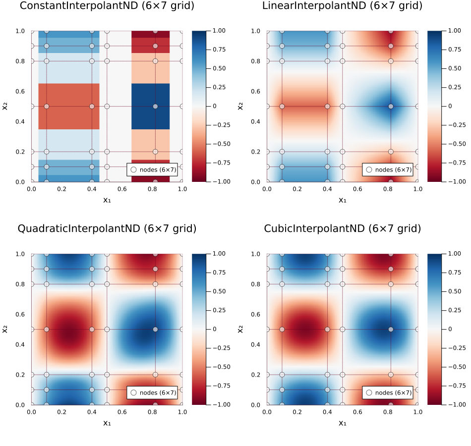

Multi-Dimensional Interpolation
FastInterpolations.jl supports 2D, 3D, and N-dimensional interpolation on rectilinear grids. The API generalizes the 1D case: where 1D takes x, ND takes (x, y, ...) as a Tuple.
This section assumes familiarity with the 1D API. Every 1D concept (methods, BCs, extrapolation, derivatives) extends to ND via Tuples.
Quick Start
using FastInterpolations
# Define a 2D rectilinear grid and data
x = range(0.0, 2π, 20)
y = [0.0, 0.3, 0.7, 1.0, 1.5, 2.0] # non-uniform
data = [sin(xi) * cos(yi) for xi in x, yi in y]
# Interpolant API (recommended)
itp = cubic_interp((x, y), data)
itp((1.0, 0.5)) # scalar query
# One-shot API
cubic_interp((x, y), data, (1.0, 0.5)) # same resultThe Tuple Rule
Every 1D argument becomes a Tuple in ND. This applies uniformly:
| Concept | 1D | ND |
|---|---|---|
| Grid | x | (x, y) or (x, y, z) |
| Query (scalar) | xq | (xq, yq) |
| Query (batch) | xqs::Vector | (xqs, yqs) |
| BC | bc=CubicFit() | bc=(CubicFit(), PeriodicBC()) |
| Extrap | extrap=ClampExtrap() | extrap=(ClampExtrap(), WrapExtrap()) |
| Derivative | deriv=DerivOp(1) | deriv=DerivOp(1, 0) for ∂f/∂x |
| Search | search=AutoSearch() (default) | search=AutoSearch() (default) or per-axis tuple (e.g., search=(AutoSearch(), AutoSearch())) |
Broadcast rule: A scalar value is broadcast to all axes. bc=CubicFit() is equivalent to bc=(CubicFit(), CubicFit()) in 2D.
Available Methods
All four interpolation methods support ND:
| Method | Function | BC Required? | Continuity |
|---|---|---|---|
| Constant | constant_interp((x,y), data) | No (side only) | C⁻¹ |
| Linear | linear_interp((x,y), data) | No | C⁰ |
| Quadratic | quadratic_interp((x,y), data) | Yes (1 per axis) | C¹ |
| Cubic | cubic_interp((x,y), data) | Yes (2 per axis) | C² |
Grid Types
Each axis can independently be a Range (uniform, O(1) lookup) or Vector (non-uniform, O(log n) lookup). This allows heterogeneous grids:
x = range(0.0, 1.0, 100) # uniform → O(1)
y = [0.0, 0.1, 0.4, 0.9, 1.5] # non-uniform → O(log n)
itp = cubic_interp((x, y), data) # mixed grid worksQuery Modes
Scalar Query
itp((0.5, 1.0)) # returns a single valueBatch Query (SoA — Structure of Arrays)
xqs = range(0.0, 1.0, 50)
yqs = range(0.0, 2.0, 50)
itp((xqs, yqs)) # returns Vector of length 50Batch Query (AoS — Array of Structures)
points = [(0.1, 0.2), (0.3, 0.4), (0.5, 0.6)]
itp(points) # returns Vector of length 3Any Indexable Container (Query Protocol)
ND batch evaluation accepts any container type whose elements are indexable points. Types with standard length, getindex, and eltype semantics work zero-config:
using StaticArrays
# Vector{SVector} — works out of the box
pts = [SVector(0.1, 0.2), SVector(0.3, 0.4)]
itp(pts) # returns Vector of length 2
# AbstractVector query also works for scalar calls
itp(SVector(0.5, 1.0)) # single-point evaluationFor custom containers where Base semantics differ (e.g., SoA-style wrappers), override three functions:
import FastInterpolations: _query_length, _query_extract, _query_eltype
_query_length(q::MyQueries) = ... # number of query points
_query_extract(q::MyQueries, k) = ... # k-th point (any indexable)
_query_eltype(q::MyQueries) = ... # scalar floating type (e.g. Float64)This is orthogonal to Custom Value Types (Duck Typing), which governs what types can be interpolated (Tv). The query protocol governs what container types can hold query points.
Visualization (2D)
2D interpolants have built-in plot recipes:
using Plots
itp = cubic_interp((x, y), data)
plot(itp) # heatmap with grid nodes and gridlinesExample — Method Comparison
Comparing constant, linear, quadratic, and cubic interpolation on a non-uniform 2D grid:
using FastInterpolations, Plots
f(x, y) = sin(2π * x) * cos(2π * y)
xs = [0.0, 0.1, 0.4, 0.5, 0.82, 1.0]
ys = [0.0, 0.1, 0.2, 0.5, 0.8, 0.9, 1.0]
data = [f(xi, yj) for xi in xs, yj in ys]
itp_const = constant_interp((xs, ys), data)
itp_linear = linear_interp((xs, ys), data)
itp_quad = quadratic_interp((xs, ys), data; bc=MinCurvFit())
itp_cubic = cubic_interp((xs, ys), data)
kw = (c=:RdBu, clims=(-1,1), ratio=:equal, xlims=(0,1), ylims=(0,1))
itps = (itp_const, itp_linear, itp_quad, itp_cubic)
plot((plot(itp; kw...) for itp in itps)..., layout=(2,2), size=(950, 900))
Custom options: show_nodes, show_gridlines, resolution, node_color, gridline_style. Use help_plot(itp) to discover all options.
Unified API: interp / interp!
The interp function provides a single entry point for N-dimensional interpolation with per-axis method specification. It supports both homogeneous (all axes same method) and heterogeneous (mixed methods per axis) interpolation.
# Homogeneous: auto-dispatches to CubicInterpolantND (same as cubic_interp)
itp = interp((x, y), data; method=CubicInterp())
# Heterogeneous: cubic on axis 1, linear on axis 2
itp = interp((x, y), data; method=(CubicInterp(), LinearInterp()))
itp((0.5, 0.3)) # evaluate
gradient(itp, (0.5, 0.3)) # analytical gradient worksOne-Shot (Zero-Allocation)
Evaluate without creating an interpolant — ideal for hot loops with changing data:
# Scalar one-shot
val = interp((x, y), data, (0.5, 0.3); method=(CubicInterp(), LinearInterp()))
# Batch one-shot
vals = interp((x, y), data, (xqs, yqs); method=CubicInterp())
# In-place batch
interp!(output, (x, y), data, (xqs, yqs); method=CubicInterp())Per-Axis Options
Each axis can have its own method, boundary condition, and extrapolation:
itp = interp((x, y, z), data3d;
method = (CubicInterp(bc=PeriodicBC()), LinearInterp(), QuadraticInterp()),
extrap = (WrapExtrap(), ClampExtrap(), NoExtrap()),
)For full details, see the dedicated Unified API Guide.
See Also
- Unified API (
interp) — Heterogeneous per-axis methods - Boundary Conditions — Per-axis BC configuration
- Derivatives — Partial derivatives, gradient, hessian
- Extrapolation — Per-axis extrapolation modes